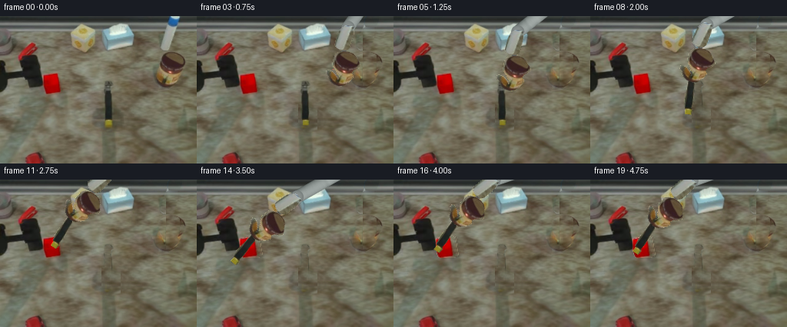
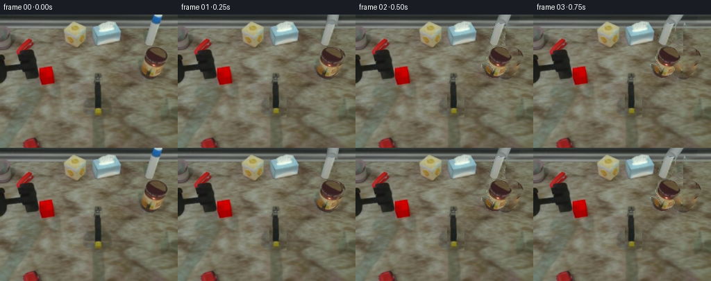

CODING AGENTS AS PIXEL WORLD MODELS
traex/GPT-6.1-Sol · common50_0049
点击播放 · 原生 RGB 像素
逐轮保存的候选
回放视频、检查图与代码变化。
每份候选均可单独播放。实际图片检查记录在下方工具轨迹中。
候选 01播放与检查图
点击播放 · 原生 RGB 像素


展开代码变化
--- 上一保存版本
+++ 本次保存版本
@@ -0,0 +1,188 @@
+from pathlib import Path
+import math
+import numpy as np
+from PIL import Image, ImageDraw, ImageFilter
+import artifact_io
+
+ROOT=Path(__file__).resolve().parent
+W,H=256,192
+SRC=np.array(Image.open(ROOT/'first_frame.png').convert('RGB'))
+Y,X=np.mgrid[:H,:W]
+
+def polygon(points, soft=.3):
+ s=4
+ im=Image.new('L',(W*s,H*s))
+ ImageDraw.Draw(im).polygon([(round(x*s),round(y*s)) for x,y in points],fill=255)
+ im=im.resize((W,H),Image.Resampling.LANCZOS)
+ if soft: im=im.filter(ImageFilter.GaussianBlur(soft))
+ return np.array(im)/255.
+
+# Each moving assembly is made from the original photograph. No image model
+# or renderer is used. All articulated links are rigid local-coordinate bodies.
+wrist_mask=polygon([(220,13),(231,14),(232,18),(231,27),(229,35),(227,42),(224,45),(215,45),(210,42),(208,39),(209,34),(212,23),(215,17)])
+body_mask=polygon([(218,47),(226,47),(232,49),(236,53),(238,57),(241,61),(242,65),(239,68),(233,71),(231,75),(233,78),(232,82),(227,87),(222,91),(215,92),(208,90),(204,87),(202,83),(201,79),(198,77),(198,73),(201,72),(206,74),(209,77),(212,81),(213,84),(215,83),(215,79),(212,77),(211,73),(208,69),(206,65),(207,58),(208,52),(212,49)],.2)
+robot_mask=np.maximum(wrist_mask,body_mask)
+old_upper=polygon([(222,-2),(237,-2),(237,4),(235,10),(233,14),(226,17),(220,15),(218,10),(219,3)])
+head_mask=polygon([(138,85),(143,85),(145,87),(146,90),(144,92),(144,97),(136,97),(135,95),(136,91),(136,88)],.2)
+handle_mask=polygon([(136,96),(143,96),(145,102),(145,114),(146,125),(145,133),(147,136),(146,142),(138,142),(138,136),(136,134),(135,124),(136,109)],.2)
+tool_mask=np.maximum(head_mask,handle_mask)
+# Red target, with all facets retained, is a rigid block.
+block_mask=polygon([(57,77),(65,75),(78,72),(82,74),(83,80),(86,98),(81,101),(63,101),(59,99),(57,91)],.2)
+
+# Reconstruct revealed table by horizontally borrowing rows of unobstructed
+# wood grain and matching their boundary tones using a screened harmonic fill.
+remove=np.maximum.reduce([robot_mask,old_upper,tool_mask])
+# Soft original cast shadow of the tool should lift off the table with it.
+shadow_region=polygon([(133,114),(149,117),(163,126),(165,138),(158,147),(145,152),(139,149),(143,145),(136,144),(124,136),(125,128),(126,120)],1.1)
+remove=np.maximum(remove,shadow_region*.9)
+
+def reconstruct(a,mask):
+ out=a.astype(float).copy()
+ # Photographic table patches from the same image, at the same y.
+ patch=a.astype(float).copy()
+ for y in range(H):
+ for x in range(W):
+ if mask[y,x]>.01:
+ if x>190:
+ sx=181+(x-198)%18
+ else:
+ sx=164+(x-132)%25
+ patch[y,x]=a[y,sx]
+ # Boundary correction: solve Laplace equation for an offset to the sampled
+ # texture, constrained by the original photograph outside the erased area.
+ known=mask<.08
+ diff=a.astype(float)-patch
+ corr=diff.copy()
+ corr[~known]=0
+ for _ in range(360):
+ q=(np.roll(corr,1,0)+np.roll(corr,-1,0)+np.roll(corr,1,1)+np.roll(corr,-1,1))/4
+ corr[~known]=q[~known]
+ fill=np.clip(patch+corr,0,255)
+ # Header rail is perfectly stationary and continues horizontally.
+ for y in range(0,14):
+ fill[y,211:243]=a[y,181:213]
+ return out*(1-mask[:,:,None])+fill*mask[:,:,None]
+
+BG=reconstruct(SRC,remove)
+# Block stays on its supporting table; only a slight impact response is added.
+BG_BLOCK=reconstruct(np.clip(BG,0,255).astype('uint8'),block_mask)
+
+# Premultiplied photographic layers eliminate brown fringes when rotated.
+def layer(alpha):
+ rgba=np.dstack((SRC.astype(float)*alpha[:,:,None],alpha*255)).clip(0,255).astype('uint8')
+ return Image.fromarray(rgba,'RGBA')
+ROBOT=layer(robot_mask)
+TOOL=layer(tool_mask)
+BLOCK=layer(block_mask)
+P0=np.array([215.,85.])
+H0=np.array([140.5,93.])
+A0=np.array([224.,15.])
+
+def rot(deg):
+ a=math.radians(deg)
+ return np.array([[math.cos(a),-math.sin(a)],[math.sin(a),math.cos(a)]])
+
+def transform(layer,p0,p,angle):
+ r=rot(angle)
+ t=np.asarray(p)-r@np.asarray(p0)
+ inv=r.T
+ offset=-inv@t
+ mat=tuple([inv[0,0],inv[0,1],offset[0],inv[1,0],inv[1,1],offset[1]])
+ return np.array(layer.transform((W,H),Image.Transform.AFFINE,mat,Image.Resampling.BICUBIC)).astype(float)
+
+def over(canvas,l):
+ alpha=l[:,:,3:4]/255.
+ return canvas*(1-alpha)+l[:,:,:3]
+
+def linkage(canvas,A):
+ # Orthographic projection of a rigid upper link. The depth component changes
+ # while its physical length remains 185 units. The lower sleeve is a fixed
+ # length photographed rigid piece, rotated together with the tool grasp.
+ B=np.array([229.,-34.])
+ delta=np.asarray(A)-B
+ length=np.linalg.norm(delta)
+ z=math.sqrt(max(0,185**2-length**2))
+ u=delta/length
+ v=np.array([-u[1],u[0]])
+ along=(X-B[0])*u[0]+(Y-B[1])*u[1]
+ across=(X-B[0])*v[0]+(Y-B[1])*v[1]
+ # A steel forearm with a shaded round cross section and narrow edge rails.
+ radius=8.3
+ end=A
+ d=np.where(along<0,np.hypot(along,across),np.where(along>length,np.hypot(along-length,across),np.abs(across)))
+ alpha=np.clip(radius+.65-d,0,1)
+ cross=np.clip(across/radius,-1,1)
+ c=np.sqrt(np.clip(1-cross**2,0,1))
+ shade=103+62*c-17*cross
+ texture=(SRC[np.clip((along+20).astype(int),0,H-1),np.clip((220+across*.4).astype(int),0,W-1),0].astype(float)-135)*.12
+ colors=np.stack([shade-8+texture,shade+texture,shade-3+texture],2)
+ # Close to the original elbow, joint housing is part of the same solid link.
+ joint=np.hypot(X-A[0],Y-A[1])
+ ja=np.clip(9.1-joint,0,1)
+ js=108+37*np.sqrt(np.clip(1-(joint/9.1)**2,0,1))
+ colors=colors*(1-ja[:,:,None])+np.stack([js-5,js+2,js],2)*ja[:,:,None]
+ alpha=np.maximum(alpha,ja)
+ return canvas*(1-alpha[:,:,None])+colors*alpha[:,:,None]
+
+def shadow(canvas,contact,angle,amount,height):
+ r=rot(angle)
+ center=np.asarray(contact)+r@np.array([4.,26.]) + np.array([7.,10.+height*.18])
+ u=r@np.array([0.,1.]);v=np.array([-u[1],u[0]])
+ dx=X-center[0];dy=Y-center[1]
+ along=dx*u[0]+dy*u[1];across=dx*v[0]+dy*v[1]
+ sm=np.exp(-.5*((along/24)**2+(across/(4.5+height*.08))**2))*amount
+ sm*=np.clip((Y-18)/12,0,1)
+ return canvas*(1-sm[:,:,None])
+
+def smooth(t):
+ t=np.clip(t,0,1)
+ return t*t*(3-2*t)
+
+def interpolate(keys,i):
+ for k in range(len(keys)-1):
+ t0,x0,y0,a0=keys[k];t1,x1,y1,a1=keys[k+1]
+ if t0<=i<=t1:
+ t=smooth((i-t0)/(t1-t0))
+ return np.array([x0+(x1-x0)*t,y0+(y1-y0)*t]),a0+(a1-a0)*t
+ return np.array(keys[-1][1:3]),keys[-1][3]
+
+# 0--7 approach and close; 8--12 lift and backswing; 13--14 impact;
+# 15--19 controlled recovery. The tool and gripper share a rigid grasp transform.
+keys=[(0,215,85,0),(1,212,85,0),(3,185,84,2),(5,151,90,1),
+ (6,141,93,0),(7,141,93,0),(9,124,65,16),(11,95,46,33),
+ (12,80,45,39),(13,79,52,40),(14,78,70,40),
+ (15,80,56,38),(16,83,52,35),(18,85,54,34),(19,85,54,34)]
+frames=[SRC.copy()]
+for i in range(1,20):
+ p,angle=interpolate(keys,i)
+ moving_tool=i>=8
+ canvas=BG.copy() if moving_tool else over(BG.copy(),np.array(TOOL).astype(float))
+ # Keep the existing contact shadow before pickup, fade it into a raised one.
+ if not moving_tool:
+ canvas=canvas*(1-shadow_region[:,:,None]*.06)
+ else:
+ canvas=shadow(canvas,p,angle,.13,max(0,93-p[1]))
+ # The target is not crushed or deformed. A short, subpixel table-plane nudge
+ # and recovery marks mechanical contact instead of adding graphic effects.
+ if i>=14:
+ response={14:(-.4,.15),15:(-1.2,.4),16:(-1.4,.45)}.get(i,(-1.4,.45))
+ canvas=BG_BLOCK.copy()
+ canvas=shadow(canvas,p,angle,.13,max(0,93-p[1]))
+ canvas=over(canvas,transform(BLOCK,np.array([72.,87.]),np.array([72.,87.])+response,0))
+ # First the overhead rigid arm, then hammer, then the gripper's jaws.
+ elbow=p+rot(angle)@(A0-P0)
+ canvas=linkage(canvas,elbow)
+ if moving_tool:
+ canvas=over(canvas,transform(TOOL,H0,p,angle))
+ # Fixed connector between the silver sleeve and the black wrist housing.
+ q=p+rot(angle)@(np.array([220.,44.])-P0)
+ q2=p+rot(angle)@(np.array([220.,50.])-P0)
+ connector=polygon([q+rot(angle)@np.array([-3,0]),q+rot(angle)@np.array([3,0]),q2+rot(angle)@np.array([3,0]),q2+rot(angle)@np.array([-3,0])],.25)
+ canvas=canvas*(1-connector[:,:,None])+np.array([89.,91.,86.])*connector[:,:,None]
+ canvas=over(canvas,transform(ROBOT,P0,p,angle))
+ frames.append(np.clip(canvas,0,255).astype('uint8'))
+frames=np.stack(frames)
+# Save an intermediate candidate before publishing the complete artifact.
+np.save(ROOT/'candidate_rgb.npy',frames)
+artifact_io.save(frames,ROOT)
+print('Generated',frames.shape,frames.dtype,'first frame identical:',np.array_equal(frames[0],SRC))
候选 02播放与检查图
点击播放 · 原生 RGB 像素

展开代码变化
--- 上一保存版本
+++ 本次保存版本
@@ -70,8 +70,15 @@
# Premultiplied photographic layers eliminate brown fringes when rotated.
def layer(alpha):
rgba=np.dstack((SRC.astype(float)*alpha[:,:,None],alpha*255)).clip(0,255).astype('uint8')
- return Image.fromarray(rgba,'RGBA')
-ROBOT=layer(robot_mask)
+ return Image.fromarray(rgba)
+# The two fingertip pads articulate by a small, symmetric closure; the palm
+# and sleeve keep exactly the same geometry throughout the motion.
+left_pad=polygon([(201,79),(206,80),(209,83),(212,87),(210,89),(207,88),(203,85)],.2)*robot_mask
+right_pad=polygon([(217,81),(223,81),(223,85),(220,89),(217,89),(215,87)],.2)*robot_mask
+pad_union=np.maximum(left_pad,right_pad)
+ROBOT=layer(robot_mask*(1-pad_union))
+LEFT_PAD=layer(left_pad)
+RIGHT_PAD=layer(right_pad)
TOOL=layer(tool_mask)
BLOCK=layer(block_mask)
P0=np.array([215.,85.])
@@ -180,6 +187,9 @@
connector=polygon([q+rot(angle)@np.array([-3,0]),q+rot(angle)@np.array([3,0]),q2+rot(angle)@np.array([3,0]),q2+rot(angle)@np.array([-3,0])],.25)
canvas=canvas*(1-connector[:,:,None])+np.array([89.,91.,86.])*connector[:,:,None]
canvas=over(canvas,transform(ROBOT,P0,p,angle))
+ closure=.85*smooth((i-5)/2)
+ canvas=over(canvas,transform(LEFT_PAD,P0,p+rot(angle)@np.array([closure,0.]),angle))
+ canvas=over(canvas,transform(RIGHT_PAD,P0,p+rot(angle)@np.array([-closure,0.]),angle))
frames.append(np.clip(canvas,0,255).astype('uint8'))
frames=np.stack(frames)
# Save an intermediate candidate before publishing the complete artifact.
候选 03播放与检查图
可观测工具轨迹
实际执行的命令与返回图片。
命令 1exit 0
/bin/bash -lc 'ls -la && cat prompt.txt && cat GENERATION_RULES.md'
命令 2exit 0
/bin/bash -lc "cat task_spec.json; cat artifact_io.py; python - <<'PY'
from PIL import Image
import numpy as np
im=np.array(Image.open('first_frame.png'))
print(im.shape)
# color map sampled in 4x4 patches
for y in range(0,192,4):
s=''
for x in range(0,256,4):
r,g,b=np.mean(im[y:y+4,x:x+4,:3],axis=(0,1))
if max(r,g,b)<45:c='@'
elif max(r,g,b)<85:c='#'
elif r>g*1.45 and r>b*1.4:c='R'
elif r>130 and g>90 and b<g*.65:c='Y'
elif r>b*1.3 and g>b*1.15:c='b'
elif min(r,g,b)>190:c='.'
elif b>r*1.1:c='B'
elif min(r,g,b)>135:c=':'
else:c='o'
s+=c
print(f'{y:3} '+s)
PY"命令 3exit 0
/bin/bash -lc "python - <<'PY'
from PIL import Image
import numpy as np
im=Image.open('first_frame.png').convert('RGB')
pal=im.quantize(colors=24,method=Image.Quantize.MEDIANCUT)
p=np.array(pal.getpalette()).reshape(-1,3)[:24]
cs='ABCDEFGHIJKLMNOPQRSTUVWX'
for c,v in zip(cs,p):print(c,v)
a=np.asarray(pal)
for y in range(0,192,2):
print(f'{y:3} '+''.join(cs[np.bincount(a[y:y+2,x:x+2].ravel(),minlength=24).argmax()] for x in range(0,256,2)))
PY"命令 4exit 0
/bin/bash -lc "python - <<'PY'
from PIL import Image
import numpy as np
A=np.array(Image.open('first_frame.png'))[:,:,:3]
# detailed categorical map upper right and tool
for box in [(80,0,180,64),(126,75,174,152),(194,40,236,100),(0,30,84,108)]:
x0,y0,x1,y1=box
print('\\nBOX',box,'\\n '+''.join(str(x//10%10) for x in range(x0,x1))+'\\n '+''.join(str(x%10) for x in range(x0,x1)))
for y in range(y0,y1):
s=''
for x in range(x0,x1):
r,g,b=map(int,A[y,x]); mx=max(r,g,b);mn=min(r,g,b)
if r>g*1.45 and r>b*1.4 and r>95:c='R'
elif r>g*1.05 and g>b*1.4 and r>130:c='Y'
elif mx<45:c='@'
elif mx<70:c='#'
elif mx<95:c='o'
elif mn>200:c='W'
elif mn>160:c='w'
elif b>r*.97 and r>125:c='s'
elif b>r*1.05:c='B'
elif mn>120:c=':'
elif mx>145:c='+'
else:c=' '
s+=c
print(f'{y:3} '+s)
print('samples')
for y in [12,16,20,24,28,32,36,40,44,48,52,56,80,84,88,92,96,100,104,108,120,132,140]:
print(y,[(x,tuple(A[y,x])) for x in range(90,178,4)])
PY"命令 5exit 0
/bin/bash -lc "python - <<'PY'
from PIL import Image
import numpy as np
A=np.array(Image.open('first_frame.png')).astype(float)
for box in [(0,0,256,192),(196,0,256,100),(128,80,151,105)]:
x0,y0,x1,y1=box
print('\\nBOX',box)
step=2 if x1-x0>100 else 1
for y in range(y0,y1,step):
s=''
for x in range(x0,x1,step):
r,g,b=A[y:y+step,x:x+step].mean((0,1));v=.299*r+.587*g+.114*b
if r>g*1.5 and r>90:s+='R'
elif g>b*1.65 and r>130:s+='Y'
elif b>r*1.01 and r>100:s+='S'
else:s+=' .:-=+*#%@'[min(9,int(v/25.6))]
print(f'{y:3} '+s)
PY"命令 6exit 0
/bin/bash -lc "python - <<'PY'
from PIL import Image
import numpy as np
A=np.array(Image.open('first_frame.png'))
for y in range(83,100):
print(y,' '.join(f'{x}:{r:03},{g:03},{b:03}' for x in range(134,149) for r,g,b in [A[y,x]]))
PY"命令 7exit 0
/bin/bash -lc "python - <<'PY'
from PIL import Image
import numpy as np
A=np.array(Image.open('first_frame.png'))
print('central arm/tool column')
for y in range(36,100):
print(y,' '.join(f'{r:03}/{g:03}/{b:03}' for r,g,b in A[y,132:153:2]))
print('top left detailed palette')
for y in range(12,48):
print(y,' '.join(f'{r:03}/{g:03}/{b:03}' for r,g,b in A[y,92:126:3]))
PY"命令 8exit 0
/bin/bash -lc "cat > generate.py <<'PY'
from pathlib import Path
import math
import numpy as np
from PIL import Image, ImageDraw, ImageFilter
import artifact_io
ROOT=Path(__file__).resolve().parent
W,H=256,192
SRC=np.array(Image.open(ROOT/'first_frame.png').convert('RGB'))
Y,X=np.mgrid[:H,:W]
def polygon(points, soft=.3):
s=4
im=Image.new('L',(W*s,H*s))
ImageDraw.Draw(im).polygon([(round(x*s),round(y*s)) for x,y in points],fill=255)
im=im.resize((W,H),Image.Resampling.LANCZOS)
if soft: im=im.filter(ImageFilter.GaussianBlur(soft))
return np.array(im)/255.
# Each moving assembly is made from the original photograph. No image model
# or renderer is used. All articulated links are rigid local-coordinate bodies.
wrist_mask=polygon([(220,13),(231,14),(232,18),(231,27),(229,35),(227,42),(224,45),(215,45),(210,42),(208,39),(209,34),(212,23),(215,17)])
body_mask=polygon([(218,47),(226,47),(232,49),(236,53),(238,57),(241,61),(242,65),(239,68),(233,71),(231,75),(233,78),(232,82),(227,87),(222,91),(215,92),(208,90),(204,87),(202,83),(201,79),(198,77),(198,73),(201,72),(206,74),(209,77),(212,81),(213,84),(215,83),(215,79),(212,77),(211,73),(208,69),(206,65),(207,58),(208,52),(212,49)],.2)
robot_mask=np.maximum(wrist_mask,body_mask)
old_upper=polygon([(222,-2),(237,-2),(237,4),(235,10),(233,14),(226,17),(220,15),(218,10),(219,3)])
head_mask=polygon([(138,85),(143,85),(145,87),(146,90),(144,92),(144,97),(136,97),(135,95),(136,91),(136,88)],.2)
handle_mask=polygon([(136,96),(143,96),(145,102),(145,114),(146,125),(145,133),(147,136),(146,142),(138,142),(138,136),(136,134),(135,124),(136,109)],.2)
tool_mask=np.maximum(head_mask,handle_mask)
# Red target, with all facets retained, is a rigid block.
block_mask=polygon([(57,77),(65,75),(78,72),(82,74),(83,80),(86,98),(81,101),(63,101),(59,99),(57,91)],.2)
# Reconstruct revealed table by horizontally borrowing rows of unobstructed
# wood grain and matching their boundary tones using a screened harmonic fill.
remove=np.maximum.reduce([robot_mask,old_upper,tool_mask])
# Soft original cast shadow of the tool should lift off the table with it.
shadow_region=polygon([(133,114),(149,117),(163,126),(165,138),(158,147),(145,152),(139,149),(143,145),(136,144),(124,136),(125,128),(126,120)],1.1)
remove=np.maximum(remove,shadow_region*.9)
def reconstruct(a,mask):
out=a.astype(float).copy()
# Photographic table patches from the same image, at the same y.
patch=a.astype(float).copy()
for y in range(H):
for x in range(W):
if mask[y,x]>.01:
if x>190:
sx=181+(x-198)%18
else:
sx=164+(x-132)%25
patch[y,x]=a[y,sx]
# Boundary correction: solve Laplace equation for an offset to the sampled
# texture, constrained by the original photograph outside the erased area.
known=mask<.08
diff=a.astype(float)-patch
corr=diff.copy()
corr[~known]=0
for _ in range(360):
q=(np.roll(corr,1,0)+np.roll(corr,-1,0)+np.roll(corr,1,1)+np.roll(corr,-1,1))/4
corr[~known]=q[~known]
fill=np.clip(patch+corr,0,255)
# Header rail is perfectly stationary and continues horizontally.
for y in range(0,14):
fill[y,211:243]=a[y,181:213]
return out*(1-mask[:,:,None])+fill*mask[:,:,None]
BG=reconstruct(SRC,remove)
# Block stays on its supporting table; only a slight impact response is added.
BG_BLOCK=reconstruct(np.clip(BG,0,255).astype('uint8'),block_mask)
# Premultiplied photographic layers eliminate brown fringes when rotated.
def layer(alpha):
rgba=np.dstack((SRC.astype(float)*alpha[:,:,None],alpha*255)).clip(0,255).astype('uint8')
return Image.fromarray(rgba,'RGBA')
ROBOT=layer(robot_mask)
TOOL=layer(tool_mask)
BLOCK=layer(block_mask)
P0=np.array([215.,85.])
H0=np.array([140.5,93.])
A0=np.array([224.,15.])
def rot(deg):
a=math.radians(deg)
return np.array([[math.cos(a),-math.sin(a)],[math.sin(a),math.cos(a)]])
def transform(layer,p0,p,angle):
r=rot(angle)
t=np.asarray(p)-r@np.asarray(p0)
inv=r.T
offset=-inv@t
mat=tuple([inv[0,0],inv[0,1],offset[0],inv[1,0],inv[1,1],offset[1]])
return np.array(layer.transform((W,H),Image.Transform.AFFINE,mat,Image.Resampling.BICUBIC)).astype(float)
def over(canvas,l):
alpha=l[:,:,3:4]/255.
return canvas*(1-alpha)+l[:,:,:3]
def linkage(canvas,A):
# Orthographic projection of a rigid upper link. The depth component changes
# while its physical length remains 185 units. The lower sleeve is a fixed
# length photographed rigid piece, rotated together with the tool grasp.
B=np.array([229.,-34.])
delta=np.asarray(A)-B
length=np.linalg.norm(delta)
z=math.sqrt(max(0,185**2-length**2))
u=delta/length
v=np.array([-u[1],u[0]])
along=(X-B[0])*u[0]+(Y-B[1])*u[1]
across=(X-B[0])*v[0]+(Y-B[1])*v[1]
# A steel forearm with a shaded round cross section and narrow edge rails.
radius=8.3
end=A
d=np.where(along<0,np.hypot(along,across),np.where(along>length,np.hypot(along-length,across),np.abs(across)))
alpha=np.clip(radius+.65-d,0,1)
cross=np.clip(across/radius,-1,1)
c=np.sqrt(np.clip(1-cross**2,0,1))
shade=103+62*c-17*cross
texture=(SRC[np.clip((along+20).astype(int),0,H-1),np.clip((220+across*.4).astype(int),0,W-1),0].astype(float)-135)*.12
colors=np.stack([shade-8+texture,shade+texture,shade-3+texture],2)
# Close to the original elbow, joint housing is part of the same solid link.
joint=np.hypot(X-A[0],Y-A[1])
ja=np.clip(9.1-joint,0,1)
js=108+37*np.sqrt(np.clip(1-(joint/9.1)**2,0,1))
colors=colors*(1-ja[:,:,None])+np.stack([js-5,js+2,js],2)*ja[:,:,None]
alpha=np.maximum(alpha,ja)
return canvas*(1-alpha[:,:,None])+colors*alpha[:,:,None]
def shadow(canvas,contact,angle,amount,height):
r=rot(angle)
center=np.asarray(contact)+r@np.array([4.,26.]) + np.array([7.,10.+height*.18])
u=r@np.array([0.,1.]);v=np.array([-u[1],u[0]])
dx=X-center[0];dy=Y-center[1]
along=dx*u[0]+dy*u[1];across=dx*v[0]+dy*v[1]
sm=np.exp(-.5*((along/24)**2+(across/(4.5+height*.08))**2))*amount
sm*=np.clip((Y-18)/12,0,1)
return canvas*(1-sm[:,:,None])
def smooth(t):
t=np.clip(t,0,1)
return t*t*(3-2*t)
def interpolate(keys,i):
for k in range(len(keys)-1):
t0,x0,y0,a0=keys[k];t1,x1,y1,a1=keys[k+1]
if t0<=i<=t1:
t=smooth((i-t0)/(t1-t0))
return np.array([x0+(x1-x0)*t,y0+(y1-y0)*t]),a0+(a1-a0)*t
return np.array(keys[-1][1:3]),keys[-1][3]
# 0--7 approach and close; 8--12 lift and backswing; 13--14 impact;
# 15--19 controlled recovery. The tool and gripper share a rigid grasp transform.
keys=[(0,215,85,0),(1,212,85,0),(3,185,84,2),(5,151,90,1),
(6,141,93,0),(7,141,93,0),(9,124,65,16),(11,95,46,33),
(12,80,45,39),(13,79,52,40),(14,78,70,40),
(15,80,56,38),(16,83,52,35),(18,85,54,34),(19,85,54,34)]
frames=[SRC.copy()]
for i in range(1,20):
p,angle=interpolate(keys,i)
moving_tool=i>=8
canvas=BG.copy() if moving_tool else over(BG.copy(),np.array(TOOL).astype(float))
# Keep the existing contact shadow before pickup, fade it into a raised one.
if not moving_tool:
canvas=canvas*(1-shadow_region[:,:,None]*.06)
else:
canvas=shadow(canvas,p,angle,.13,max(0,93-p[1]))
# The target is not crushed or deformed. A short, subpixel table-plane nudge
# and recovery marks mechanical contact instead of adding graphic effects.
if i>=14:
response={14:(-.4,.15),15:(-1.2,.4),16:(-1.4,.45)}.get(i,(-1.4,.45))
canvas=BG_BLOCK.copy()
canvas=shadow(canvas,p,angle,.13,max(0,93-p[1]))
canvas=over(canvas,transform(BLOCK,np.array([72.,87.]),np.array([72.,87.])+response,0))
# First the overhead rigid arm, then hammer, then the gripper's jaws.
elbow=p+rot(angle)@(A0-P0)
canvas=linkage(canvas,elbow)
if moving_tool:
canvas=over(canvas,transform(TOOL,H0,p,angle))
# Fixed connector between the silver sleeve and the black wrist housing.
q=p+rot(angle)@(np.array([220.,44.])-P0)
q2=p+rot(angle)@(np.array([220.,50.])-P0)
connector=polygon([q+rot(angle)@np.array([-3,0]),q+rot(angle)@np.array([3,0]),q2+rot(angle)@np.array([3,0]),q2+rot(angle)@np.array([-3,0])],.25)
canvas=canvas*(1-connector[:,:,None])+np.array([89.,91.,86.])*connector[:,:,None]
canvas=over(canvas,transform(ROBOT,P0,p,angle))
frames.append(np.clip(canvas,0,255).astype('uint8'))
frames=np.stack(frames)
# Save an intermediate candidate before publishing the complete artifact.
np.save(ROOT/'candidate_rgb.npy',frames)
artifact_io.save(frames,ROOT)
print('Generated',frames.shape,frames.dtype,'first frame identical:',np.array_equal(frames[0],SRC))
PY
python generate.py"命令 9exit 0
/bin/bash -lc "python - <<'PY'
import numpy as np
A=np.load('candidate_rgb.npy')
for i in [1,6,9,12,14,19]:
print('\\nFRAME',i)
for y in range(0,154,3):
s=''
for x in range(0,256,3):
r,g,b=A[i,y:y+3,x:x+3].mean((0,1));v=.299*r+.587*g+.114*b
if r>g*1.5 and r>90:s+='R'
elif g>b*1.6 and r>130:s+='Y'
elif b>r*1.01 and r>100:s+='S'
else:s+=' .:-=+*#%@'[min(9,int(v/25.6))]
print(f'{y:3} '+s)
print('deltas',[(i,round(np.abs(A[i].astype(float)-A[i-1]).mean(),2)) for i in range(1,20)])
PY"命令 10exit 0
/bin/bash -lc "python - <<'PY'
p='generate.py'
s=open(p).read()
s=s.replace(\"ROBOT=layer(robot_mask)\\nTOOL\", \"# The two fingertip pads articulate by a small, symmetric closure; the palm\\n# and sleeve keep exactly the same geometry throughout the motion.\\nleft_pad=polygon([(201,79),(206,80),(209,83),(212,87),(210,89),(207,88),(203,85)],.2)*robot_mask\\nright_pad=polygon([(217,81),(223,81),(223,85),(220,89),(217,89),(215,87)],.2)*robot_mask\\npad_union=np.maximum(left_pad,right_pad)\\nROBOT=layer(robot_mask*(1-pad_union))\\nLEFT_PAD=layer(left_pad)\\nRIGHT_PAD=layer(right_pad)\\nTOOL\")
s=s.replace(\"canvas=over(canvas,transform(ROBOT,P0,p,angle))\\n frames\", \"canvas=over(canvas,transform(ROBOT,P0,p,angle))\\n closure=.85*smooth((i-5)/2)\\n canvas=over(canvas,transform(LEFT_PAD,P0,p+rot(angle)@np.array([closure,0.]),angle))\\n canvas=over(canvas,transform(RIGHT_PAD,P0,p+rot(angle)@np.array([-closure,0.]),angle))\\n frames\")
s=s.replace(\"return Image.fromarray(rgba,'RGBA')\", \"return Image.fromarray(rgba)\")
open(p,'w').write(s)
PY
python generate.py
python - <<'PY'
import numpy as np
from PIL import Image
from pathlib import Path
A=np.load('candidate_rgb.npy')
assert A.shape==(20,192,256,3) and A.dtype==np.uint8
assert np.array_equal(A[0],np.array(Image.open('first_frame.png').convert('RGB')))
assert len(list(Path('frames').glob('*.png')))==20
# Background stability measured beyond all swept moving body regions.
static=np.zeros((192,256),bool);static[158:,:]=True
print('Maximum change in fixed lower workspace:',abs(A[:,static].astype(int)-A[0,static].astype(int)).max())
print('Saved files:', ', '.join(p.name for p in Path('.').iterdir() if p.name in ['pixels.npz','index.html','inspection.png','generate.py']))
PY"保存候选 3 份；完成命令 10 次；可验证图片返回 0 张。原始 API 响应与完整日志保留在本地。